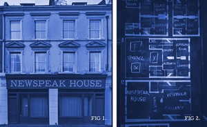

Democratic ai series
Artificial intelligence is increasingly playing an important part in our sociopolitical life.
Some worry about the erosion of democracy as AI propagates disinformation and entraps citizens in epistemic bubbles; others are convinced of AI’s ability to facilitate direct democracy and make public deliberation more efficient.
In the Democratic AI series, Simon and Yung-Hsuan guide the audience to explore how various AI tools can foster healthy democratic deliberation and collective decision-making.
To keep up to date with the events, sign up to this dedicated mailing list:
(Who is Simon and Yung-Hsuan? Visit the 2024-25 Newspeak House fellowship candidate main page.)
